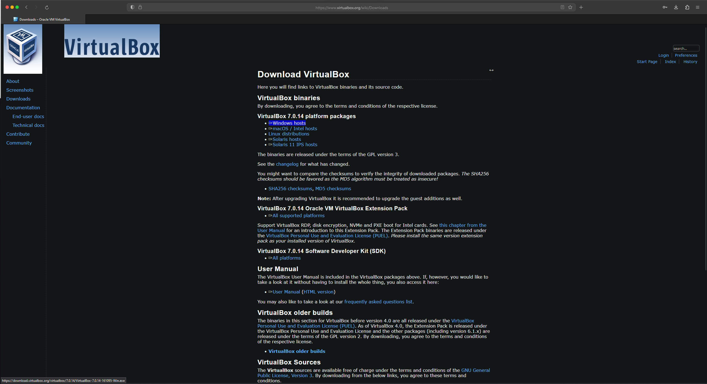

1. Descarga de VirtualBox
Para descargar VirtualBox, nos dirigimo a su pagina oficial y en el apartado de descargas, descargamos la versión correspondiente con el sistema que estemos utilizando.
2. Instalacion y configuracion
VirtualBox se instala con sus configuraciones por defecto, tan solo dándole a "siguiente" cuando nos lo pide. Una vez dentro de la aplicación nos dirigimos al menú de herramientas localizado en la página principal de la aplicación.

Una vez dentro de este seleccionamos "network" o "red".

Y una vez dentro de los ajustes de red nos dirigimos a "NAT networks" o "Redes NAT" y dentro de este creamos una red NAT con los parámetros por defecto.